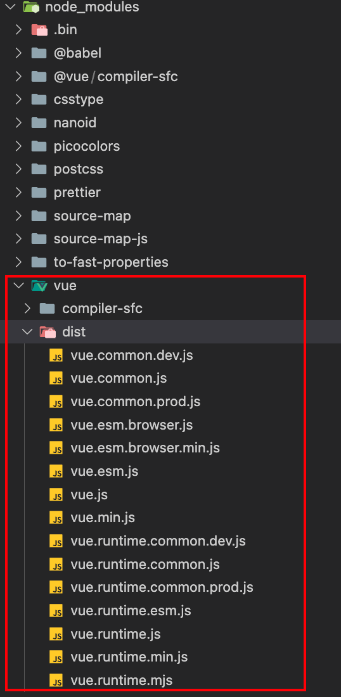

Vue学习笔记
Vue学习笔记¶
搭建Vue环境¶
1、使用CDN
<script src="https://cdn.jsdelivr.net/npm/vue@2.7.16/dist/vue.js"></script>
2、使用npm安装
npm install vue@^2
在 NPM 包的 dist/ 目录将会找到很多不同的 Vue.js 构建版本

初识Vue¶
<!DOCTYPE html>
<html lang="en">
<head>
<meta charset="UTF-8">
<meta name="viewport" content="width=device-width, initial-scale=1.0">
<!-- 引入vue -->
<script type="text/javascript" src="../js/vue.js"></script>
<title>初识Vue</title>
</head>
<body>
<div id="app">
Hello {{ msg }}
</div>
<script type="text/javascript">
// 创建vue实例
new Vue({
el: "#app",// 指定当前vue实例为哪个容器服务，一般为CSS选择器字符串
data: {// data用于存储数据，供el绑定的容器使用
msg: "xwx"
}
})
</script>
</body>
</html>
总结：
- 想让vue工作，必须创建vue实例，同时传入一个配置对象
- 容器中的代码依然符合html规范，只不过混入了一些vue的语法
- 容器和vue实例一一对应
- 真实开发中只有一个vue实例，并且配合组件一起使用
{{}}中要写js表达式，而且{{}}可以读取到data中的所有属性，也可以读取到vue实例的所有属性
模板语法¶
分为插值语法和指令语法
- 插值语法一般用于标签体里面的内容，如
<h1></h1>里面 - 指令语法管理标签属性
<div id="app">
<h1>插值语法</h1>
<h3>你好，{{name}}</h3>
<hr/>
<h1>指令语法</h1>
<a v-bind:href="url">点我去百度</a>
<!-- 简写 -->
<a :href="url">点我去百度（简写形式）</a>
</div>
<script type="text/javascript">
// 创建vue实例
new Vue({
el: "#app",// 指定当前vue实例为哪个容器服务，一般为CSS选择器字符串
data: {// data用于存储数据，供el绑定的容器使用
name: "Jack",
url: "http://www.baidu.com"
}
})
</script>
数据绑定¶
单向绑定v-bind：数据只能由data流向页面
双向绑定v-model：
- 数据在data和页面之间双向流转
- 只能应用于表单类（输入类）元素，默认收集value的值
v-model:value可简写为v-model
<div id="app">
单向数据绑定：<input type="text" v-bind:value="name">
<br/>
双向数据绑定：<input type="text" v-model:value="name">
<!-- 简写形式 -->
单向数据绑定：<input type="text" :value="name">
<br/>
双向数据绑定：<input type="text" v-model="name">
</div>
<script type="text/javascript">
new Vue({
el: "#app",
data: {
name: "xwx"
}
})
</script>
el和data的两种写法¶
容器定义
<div id="app">
你好，{{name}}
</div>
el的两种写法¶
<script type="text/javascript">
// el的两种写法
const v = new Vue({
// el: "#app",// 第一种写法
data: {
name: "xwx"
}
})
v.$mount("#app")// 第二种写法
// 甚至可以一秒钟之后再绑定数据
// setTimeout(()=>{
// v.$mount("#app")
// }, 1000)
</script>
data的两种写法¶
<script type="text/javascript">
// data的两种写法
new Vue({
el: "#app",
// data的第一种写法：对象式
// data: {
// name: "xwx"
// }
// data的第二种写法：函数式
// data: function(){// 必须是普通函数，不能是箭头函数，可简写为下一行
data(){
// console.log("@@@", this)// this是vue对象
// 必须返回一个对象
return {
name: "xwx"
}
}
})
</script>
MVVM模型¶
M：model，对应data中的数据
V：view，即模板
VM：视图模型（viewModel），即Vue实例对象
事件处理¶
- 使用
v-on:xxx或者@xxx绑定事件，其中xxx是事件名 - 事件的回调需要写在
methods对象中，最终会在vm上 methods中的函数不要使用箭头函数，否则this对象不是vmmethods中的函数会被Vue管理
<div id="app">
<h1>欢迎来{{school}}学习</h1>
<!-- <button v-on:click="showInfo1">无参函数</button> -->
<!-- 下面是简写形式 -->
<button @click="showInfo1">无参函数</button>
<button @click="showInfo2(666)">有参函数</button>
<!-- $event参数的位置随意 -->
<button @click="showInfo3(888, $event)">有参函数（同时传入event事件）</button>
</div>
<script type="text/javascript">
const vm = new Vue({
el: "#app",
data: {
school: "B站大学"
},
// 所有被vue管理的函数最好用普通函数，尽量别用箭头函数
methods: {
showInfo1(){
// console.log(this === vm)// 此处的this是vm
alert("欢迎学习!")
},
showInfo2(number){
alert(number)
},
showInfo3(number, event){
console.log(event)
alert(number)
},
}
})
</script>
事件修饰符¶
共有6个事件修饰符，常用的如下：
- prevent：阻止事件的默认行为
- stop：防止事件冒泡
- once：事件仅会触发一次
修饰符可以连续写，如
.stop.prevent
<div id="app">
<h1>欢迎来{{school}}学习</h1>
<!-- prevent：阻止事件的默认行为 -->
<a href="http://www.baidu.com" @click.prevent="showInfo">点我去百度</a>
<div @click="showInfo">
<!-- stop：防止事件冒泡 -->
<button @click.stop="showInfo">点我提示信息</button>
</div>
<div>
<!-- once：事件仅触发一次 -->
<button @click.once="showInfo">点我仅会提示一次信息</button>
</div>
</div>
<script type="text/javascript">
const vm = new Vue({
el: "#app",
data: {
school: "B站大学"
},
methods: {
showInfo(){
alert("欢迎学习!")
},
}
})
</script>
计算属性和监视¶
计算属性¶
定义：需要的属性不存在，需要通过现有的属性计算出来
get()什么时候调用？
- 第一次读取fullName时
- 当依赖的数据发生变化时
优势：get()与methods里面的方法相比，get()有缓存，效率更高，方便调试
注意点：1、计算属性最终会出现在vm上；2、如果要修改计算属性的值，则要有set()方法，而且set()内部要改变计算属性所依赖属性的值
<div id="app">
姓：<input type="text" v-model="firstName"><br/>
名：<input type="text" v-model="lastName"><br/>
全名：<span>{{fullName}}</span>
</div>
<script type="text/javascript">
const vm = new Vue({
el: "#app",
data: {
firstName: "张",
lastName: "三"
},
// 计算属性的数据放在computed里面
computed: {
fullName: {
// get()什么时候调用？1、第一次读取fullName时；2、当依赖的数据发生变化时
get(){
// console.log(this)// 此处的this是vm
console.log("get被调用...")
return this.firstName + this.lastName
}
}
}
})
</script>
如果计算属性是只读的，则可以简写
fullName: function(){
return this.firstName + this.lastName
}
// 进一步精简
fullName(){
return this.firstName + this.lastName
}
监视（watch）¶
- 当被监视的属性变化时，回调函数自动调用，进行相关操作
- 监视的属性必须存在，属性可以是计算属性
- 可以在new Vue的时候传入watch配置，也可通过
vm.$watch配置
深度监视：
- watch默认不监视对象内部值的改变（Vue自身是可以的）
- 配置
deep:true可以监视对象内部值的改变
默认看一层，配置深度监视可以看多层
<div id="app">
<h1>今天天气很{{info}}</h1>
<button @click="changeHotValue">点我改变天气</button>
<h2>a的值是：{{number.a}}</h2>
<button @click="number.a++">点我让a加一</button>
<h2>b的值是：{{number.b}}</h2>
<button @click="number.b++">点我让b加一</button>
</div>
<script type="text/javascript">
const vm = new Vue({
el: "#app",
data: {
isHot: true,
number: {
a: 1,
b: 1
}
},
computed: {
info(){
return this.isHot ? "炎热" : "凉爽"
}
},
methods:{
changeHotValue(){
this.isHot = ! this.isHot
},
},
watch: {
isHot: {
// handler方法会在isHot的值发生改变时被调用
handler(newVal, oldVal){
console.log("isHot被修改了", newVal, oldVal)
}
},
// 监视多级结构中某个具体属性的变化
// "number.a": {
// handler(){
// console.log("a被修改了")
// }
// },
// 监视多级结构中所有属性的变化
number: {
deep: true,
handler(){
console.log("number被修改了")
}
}
}
})
</script>
当watch的属性仅有handler的时候可以简写：
watch: {
// 仅有handler时可以简写
isHot(newVal, oldVal){
console.log("isHot被修改了", newVal, oldVal)
}
}
计算属性和监听属性的区别：computed能完成的，watch都能；反之不能，如watch可以进行异步操作
条件渲染¶
使用v-show和v-if进行条件渲染
show节点还在，只是不展示了；if节点直接没了
<!-- 引号里面可以是布尔值，也可以是表达式 -->
<h1 v-show="false">欢迎来到B战大学</h1>
<h1 v-if="false">欢迎来到B战大学</h1>
如果和这个节点交互很频繁，建议使用v-show，因为v-if会频繁在dom上添加删除节点，v-show则是控制是否隐藏
列表渲染¶
v-for：基于原始数据多次渲染元素或模板块。
- 期望的绑定值类型：
数组 | 对象 | number（指定次数） | string | Iterable
<div id="app">
<h2>人员列表：</h2>
<ul>
<!-- key值是唯一的，可以绑定数据的索引 -->
<!-- < v-for="p in personArr" :key="p.id"> -->
<li v-for="(p, idx) in personArr" :key="idx">
姓名：{{p.name}}，年龄：{{p.age}}
</li>
</ul>
<hr/>
<!-- 遍历对象 -->
<h2>汽车属性：</h2>
<ul>
<li v-for="(v, k) in car" :key="k">
{{k}}：{{v}}
</li>
</ul>
</div>
<script type="text/javascript">
// 创建vue实例
new Vue({
el: "#app",// 指定当前vue实例为哪个容器服务，一般为CSS选择器字符串
data: {// data用于存储数据，供el绑定的容器使用
personArr: [
{id: "001", name: "张三", age: 18},
{id: "002", name: "张33", age: 35},
{id: "003", name: "李四", age: 20},
],
car: {
name: "奥迪",
type: "Q3",
}
}
})
</script>
遍历指定次数：
<li v-for="(number, idx) in 8">{{number}}</li>
key的作用和原理¶
- key作为虚拟DOM对象的标识，当数据发生变化时，vue会根据【新数据】生成【新的虚拟DOM】。随后vue进行【新虚拟DOM】与【旧虚拟DOM】的差异比较，比较规则如下:
- 旧虚拟DOM中找到了与新虚拟DOM相同的key：
- 若虚拟DOM中内容没变，直接使用之前的真实DOM
- 若虚拟DOM中内容变了，则生成新的真实DOM，随后替换掉页面中之前的真实DOM
- 旧虚拟DOM中未找到与新虚拟DOM相同的key，创建新的真实DOM，随后渲染到到页面。
- 旧虚拟DOM中找到了与新虚拟DOM相同的key：
用index作为key可能会引发的问题：
- 若对数据进行：逆序添加、逆序删除等破坏顺序操作，会产生没有必要的真实DOM更新（界面效果没问题，但效率低）
- 如果结构中还包含输入类的DOM：会产生错误DOM更新（界面有问题）
<div id="app">
<h2>人员列表：</h2>
<button @click.once="addPerson">添加一个老六</button>
<ul>
<!-- 不能用 -->
<li v-for="(p, idx) in personArr" :key="p.id">
姓名：{{p.name}}，年龄：{{p.age}}
<input type="text">
</li>
</ul>
</div>
<script type="text/javascript">
// 创建vue实例
new Vue({
el: "#app",// 指定当前vue实例为哪个容器服务，一般为CSS选择器字符串
data: {// data用于存储数据，供el绑定的容器使用
personArr: [
{id: "001", name: "张三", age: 18},
{id: "002", name: "张33", age: 35},
{id: "003", name: "李四", age: 20},
]
},
methods: {
addPerson(){
const p = {id: "004", name: "老六", age: 40}
// this.personArr = [
// p,
// ...this.personArr
// ]
// 简写
this.personArr.unshift(p)
}
}
})
</script>
开发中如何选择key?
- 最好使用每条数据的唯一标识作为key，比如id、手机号、身份证号、学号等唯一值
- 如果不存在对数据的逆序添加、逆序删除等破坏顺序操作，仅用于渲染列表用于展示，使用index作为key是没有问题的
列表过滤¶
场景：根据输入过滤名字
<div id="app">
<input placeholder="输入名字过滤" v-model="keyword">
<ul>
<li v-for="(p, idx) in filterPersonArr" :key="p.id">
姓名：{{p.name}}，年龄：{{p.age}}
</li>
</ul>
</div>
watch实现：
new Vue({
el: "#app",
data: {
personArr: [
{ id: "001", name: "马冬梅", age: 18 },
{ id: "002", name: "马东宇", age: 35 },
{ id: "003", name: "周杰伦", age: 20 },
{ id: "004", name: "粥饼伦", age: 40 },
],
filterPersonArr: [],
keyword: "",
},
watch: {
keyword: {
immediate: true,
handler(val) {
this.filterPersonArr = this.personArr.filter((p) => {
return p.name.indexOf(val) !== -1
})
}
}
}
})
使用computed实现：
new Vue({
el: "#app",
data: {
personArr: [
{ id: "001", name: "马冬梅", age: 18 },
{ id: "002", name: "马东宇", age: 35 },
{ id: "003", name: "周杰伦", age: 20 },
{ id: "004", name: "粥饼伦", age: 40 },
],
keyword: "",
},
computed: {
filterPersonArr() {
return this.personArr.filter((p) => {
return p.name.indexOf(this.keyword) !== -1
})
}
},
})
列表排序¶
<div id="app">
<input placeholder="输入过滤条件" v-model="keyword">
<button type="text" @click="sortType = 2">年龄升序</button>
<button type="text" @click="sortType = 1">年龄降序</button>
<button type="text" @click="sortType = 0">原始顺序</button>
<ul>
<li v-for="(p, idx) in filterPersonArr" :key="p.id">
姓名：{{p.name}}，年龄：{{p.age}}
</li>
</ul>
</div>
<script type="text/javascript">
new Vue({
el: "#app",
data: {
personArr: [
{ id: "001", name: "马冬梅", age: 18 },
{ id: "002", name: "马东宇", age: 35 },
{ id: "003", name: "周杰伦", age: 20 },
{ id: "004", name: "粥饼伦", age: 40 },
],
keyword: "",
sortType: 0,
},
computed: {
filterPersonArr() {
const arr = this.personArr.filter((p) => {
return p.name.indexOf(this.keyword) !== -1
})
// 排序逻辑
if(this.sortType){
arr.sort((p1, p2)=>{
return this.sortType === 2 ? p1.age - p2.age : p2.age - p1.age
})
}
return arr
}
},
})
</script>
收集表单数据¶
- text，password收集的是value的值，用户输入的就是value
- radio收集的是value的值，但是需要自定义value属性的值
- checkbox：如果input没有自定义value属性的值，那就是checked对应的布尔值
<div id="app">
<form @submit.prevent="submitInfo">
账号：<input type="text" v-model.trim="account"><br/>
密码：<input type="password" v-model="password"><br/>
性别：
男<input type="radio" name="sex" v-model="sex" value="male">
女<input type="radio" name="sex" v-model="sex" value="female"><br/>
爱好：
抽烟<input type="checkbox" v-model="hobby" value="smoke">
喝酒<input type="checkbox" v-model="hobby" value="drink">
烫头<input type="checkbox" v-model="hobby" value="perm"><br/>
学校：
<select v-model="school">
<option value="">请选择学校</option>
<option value="pku">北京大学</option>
<option value="tsu">清华大学</option>
<option value="zju">浙江大学</option>
</select><br/>
<input type="checkbox" v-model="agree">阅读并接受用户协议<br/><br/>
<button>提交</button>
</form>
</div>
<script type="text/javascript">
// 创建vue实例
new Vue({
el: "#app",// 指定当前vue实例为哪个容器服务，一般为CSS选择器字符串
data: {// data用于存储数据，供el绑定的容器使用
account: "",
password: "",
sex: "",
hobby: [],
school: "",
agree: "",
},
methods: {
submitInfo(){
console.log(this.sex)
}
},
})
</script>
内置指令¶
v-text：向其所在的节点中渲染文本内容
v-html：向其所在的节点中渲染内容（支持html标签）【有安全风险】
v-cloak：一个特殊属性。待vue实例创建完毕并接管容器后会移除该属性。和 CSS 规则如 [v-cloak] { display: none } 一起用时，这个指令可以隐藏未编译的 Mustache 标签直到实例准备完毕。
组件化编程¶
非单文件组件¶
一个文件里面有多个组件
单文件组件¶
一个文件里面只有一个组件